A free browser tool that turns body measurements into sewing patterns you print at actual size. I built it to make clothes that fit me. After I posted it, people asked for women's outfits, so I added eight of them the same day.
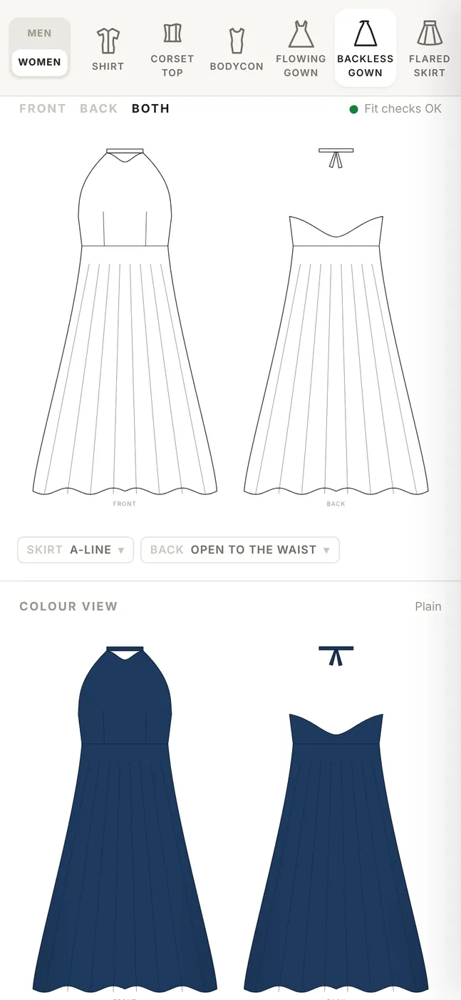
Ready-made clothes always had one issue or another for me, and I like mine loose and breathable. Getting clothes made to fit starts with a pattern. Drafting from scratch means taking a dozen measurements, working out ease and curves on paper, then drawing every piece at full size with a ruler and a French curve.
Tailors live with the same cost at scale. Every client brings new measurements, so the tailor redrafts the same shirt or trouser block again and again.
The goal: type in measurements, pick a garment, and print a pattern that is ready to cut, at true scale, with the sewing details a beginner would otherwise miss.
My first version aimed at tailors and fashion designers: enter a client's measurements, get draft cut-outs for men and women. I started with a men's trouser based on the Aldrich drafting method, then added long- and short-sleeve shirts. The first build needed a React setup to run, so I rewrote it as one HTML file that opens with a double-click.
It drew the pieces, but it was a sketch, not a tool:
I parked it.
When I came back to it, three questions shaped the rebuild:
| Question | Answer | What it changed |
|---|---|---|
| Who is it for? | Me | I can check every pattern against my own measurements before anyone else trusts it |
| Which styles first? | Shirts, trousers, shorts | Simple, breathable, casual. Three garments done well beat ten done roughly |
| How does it print? | 1:1 on my large-format printer | True scale became the core requirement, not a feature |
I also kept it as one self-contained page: no sign-up, no server. Measurements save in the browser, so they're there next time.
The PDF uses real centimetres, sized to the paper roll you choose: 24, 36, 42 or 60 inches. The layout packs pieces across the roll and rotates any piece that would otherwise run off the edge, so a shirt prints as one continuous sheet you can lay on fabric.
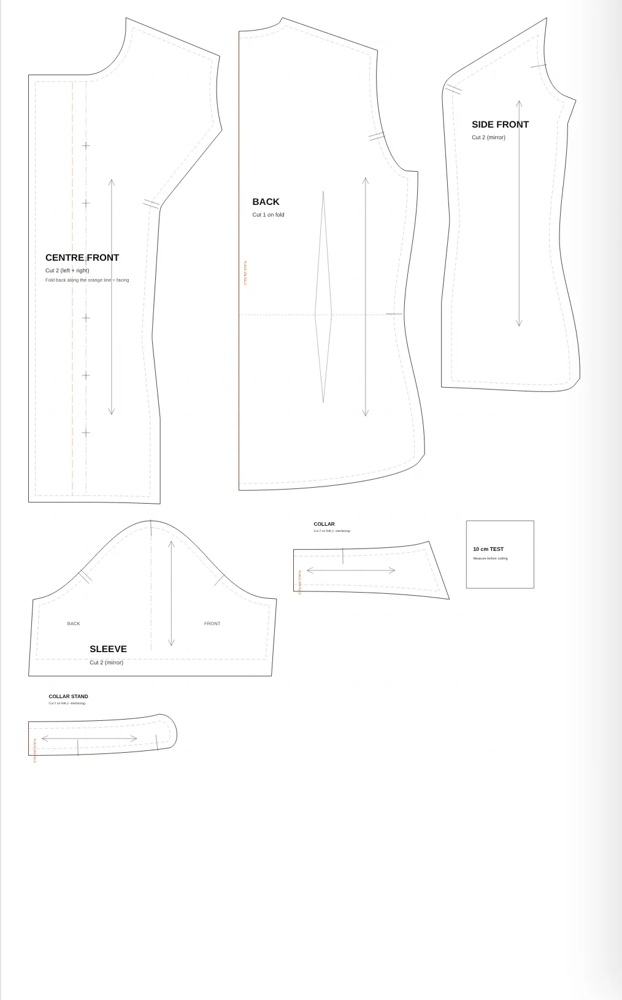
A drafting mistake usually shows up after you've cut and sewn, which wastes fabric and a weekend. So every draft runs a set of checks and shows a green or yellow dot for each:
A status line above the sketch says "Fit checks OK" or how many need a look, and tapping it opens the details. Every measurement field says where to put the tape, because a wrong measurement breaks the whole draft.
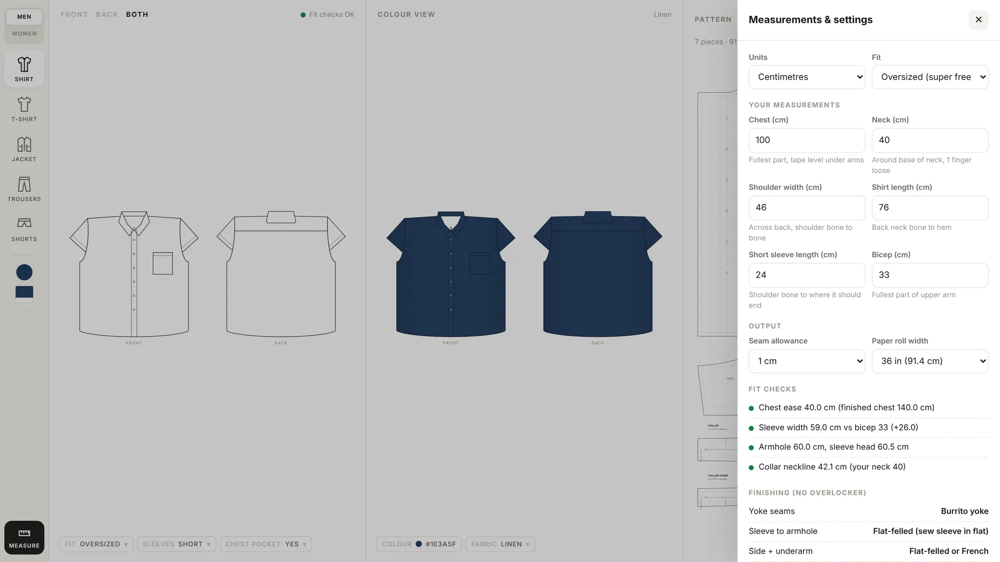
Slim, regular and relaxed covered the usual range, but I wear my clothes very loose. I added a fourth fit, Oversized (super free). It isn't just a bigger size: each garment has its own ease values, and oversized tops drop the shoulder and deepen the armhole so the volume hangs right. One fit chip switches it for every garment.
Most home sewists don't own an overlocker, the machine that stops raw edges fraying. I don't either. Linen and loose cotton, the breathable fabrics I wanted, fray fast.
So the tool tells you how to finish each seam with a normal machine: French seams, flat-felled seams, a "burrito" yoke, bias binding. A Finishing panel lists the right finish for every seam of the garment you're drafting. If those seams need 1.5 cm allowance and yours is set lower, it offers to fix it in one tap.
The first illustrated guide didn't work: its diagrams were hard to read. I rebuilt it with table-top views where the right and wrong sides of the fabric are shaded differently, clear stitch and fold marks, and QR codes linking to short video demos of the harder techniques.
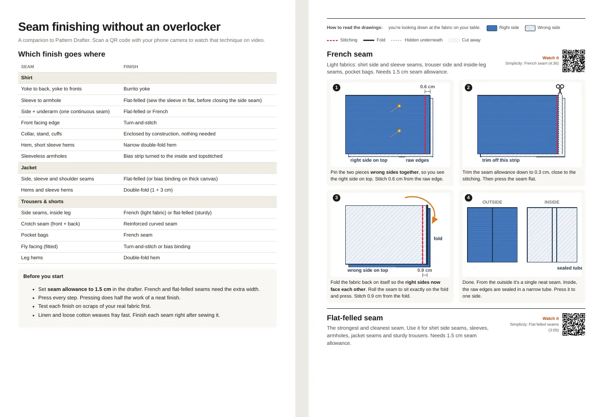
I wanted the tool to feel like a design studio rather than a form, and I had a reference: a sidebar of garments, a flat sketch, a 3D view of the garment, and the pattern. Real 3D fabric draping isn't something a single web page can do well, and a fake one would mislead people about fit.
I chose flat sketches drawn from the pattern itself. The sketch uses the same geometry as the pieces, so when you change a measurement or an option, the sketch changes too. Next to it, a colour view lets you try 12 colours and 6 fabric looks, including Adire.
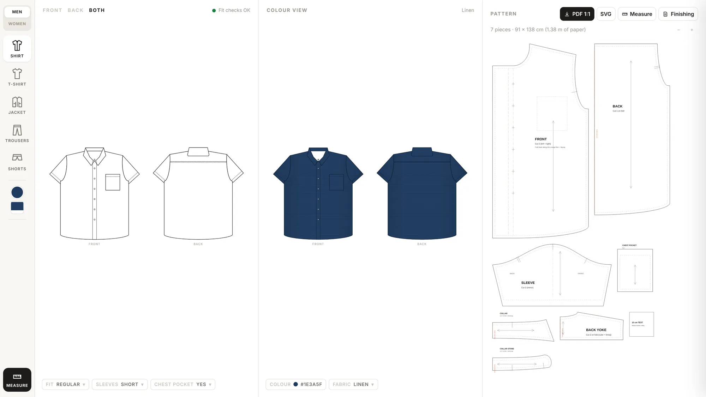
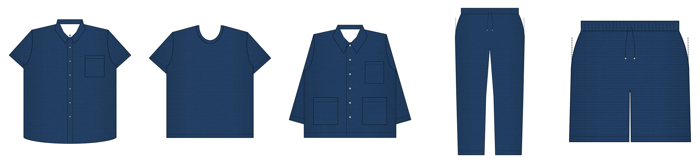
The tool went live at saintbuilds.com/patterns with a link preview built from a real screenshot of the page. I shared it on X in reply to a post asking builders to drop their project URLs, aimed at two groups: fashion lovers who want to start sewing, and tailors who want to stop redrafting.
More people bookmarked it than liked it. They were saving it to use, not just reacting to it.
Two replies changed the roadmap:
One reply asked for female outfits and promised to watch the page for updates.
Someone learning to sew wondered whether fabric type is considered.
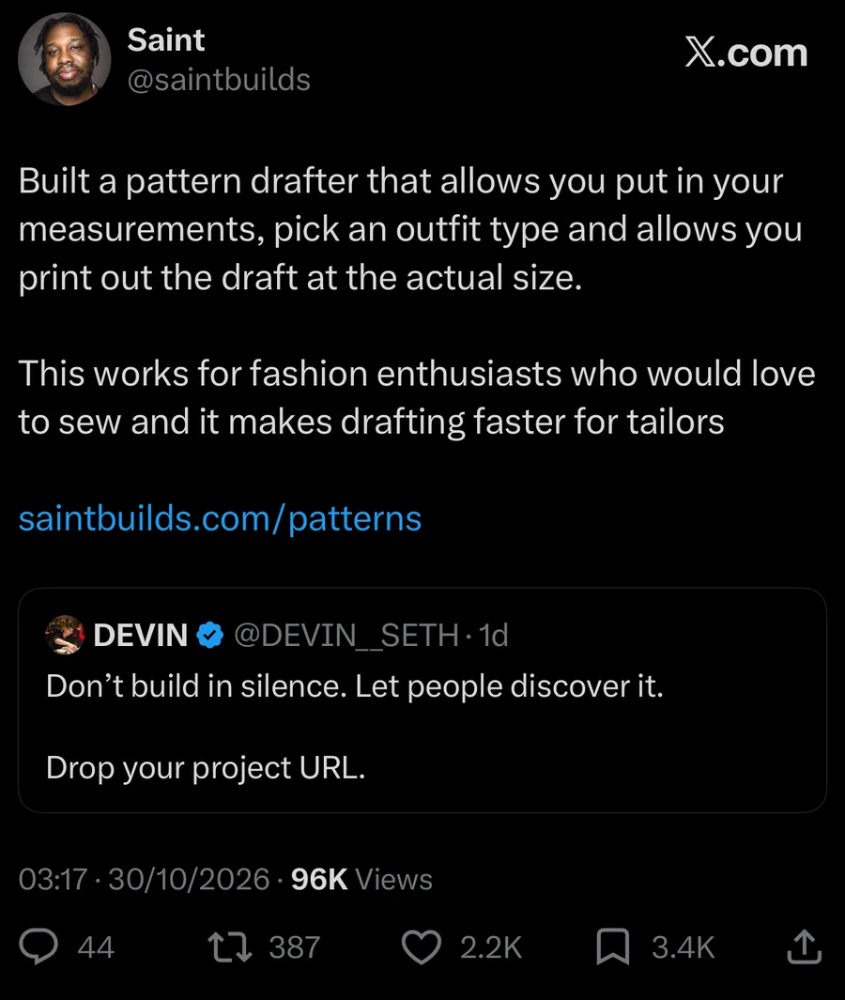
I chose eight garments to start: a button-down shirt, corset top, flared skirt, fitted skirt, backless gown, flowing gown, bodycon dress and bell bottoms. Before building, I researched how each one is drafted: bodice blocks with bust darts, dart size against bust size, circle-skirt maths, negative ease for stretch knits, corset panel drafting, and why low backs gape.
The research changed the plan. None of the eight could reuse the menswear shirt block, because women's tops shape the bust with darts or seams. But they shared three foundations, so I built those instead of eight separate garments:
I made four product calls before any code: womenswear gets its own section rather than a mixed list; the corset ships in both versions (a fashion top with a zip, and a laced, boned corset); the backless gown uses a halter neck; the flowing gown offers both a circle and a gathered skirt.
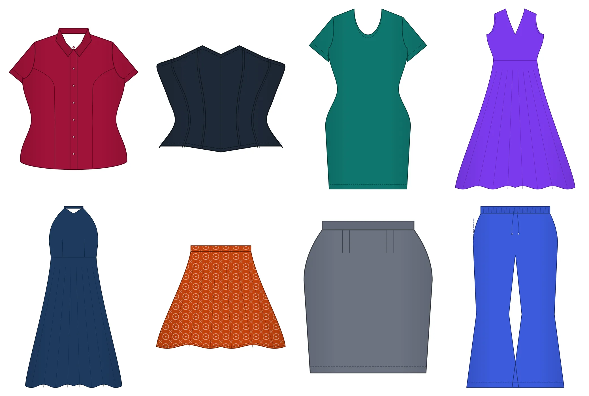
I ordered the work so each phase shipped something testable, and kept womenswear off the live site until all eight were done.
| Phase | Garments | What made it work |
|---|---|---|
| 1 | Flared + fitted skirts | Circle skirts are pure geometry: the waist radius comes from the waist measurement. The tool warns when a full circle won't fit 150 cm fabric folded in half. Fitted-skirt darts are sized from the waist-to-hip difference, with a kick pleat or slit for walking. |
| 2 | Bodice + shirt | The hardest part. Bust darts scale with bust size. For princess seams, the engine rotates the bust dart into the seam and checks both seam edges come out the same length. |
| 3 | Bodycon + corset | The bodycon is cut smaller than the body, by an amount set by how much the fabric stretches. The corset is six panels per side from bust, underbust, waist and high-hip measurements, checked seam by seam. |
| 4 | Both gowns | A floor-length circle skirt can't print as one piece, so the skirt splits into equal panels narrow enough for the paper roll. The gathered option is just rectangles, so the tool gives cutting sizes instead of wasting paper. |
| 5 | Bell bottoms | The trouser block, fitted to the knee and flaring to the hem width you enter. |
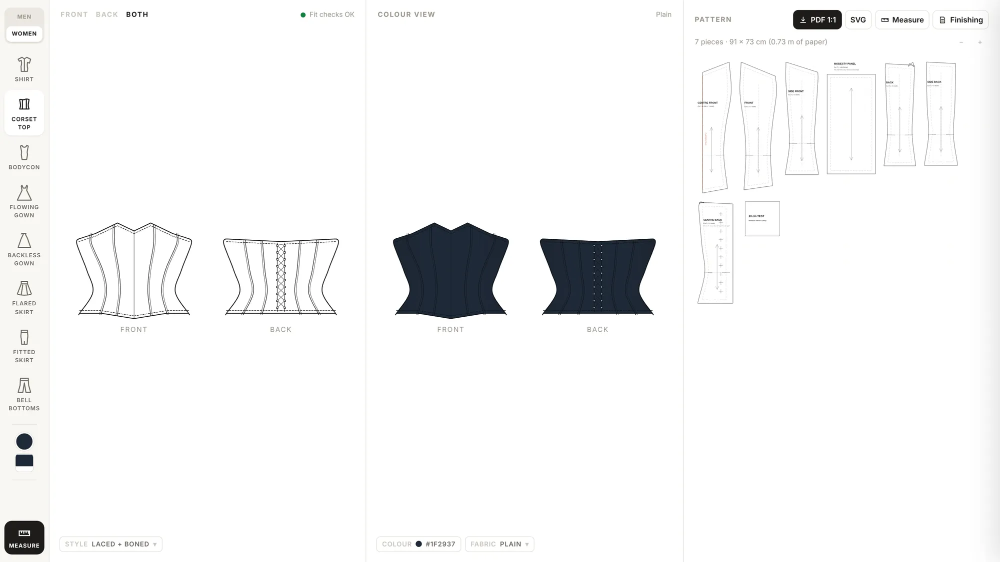
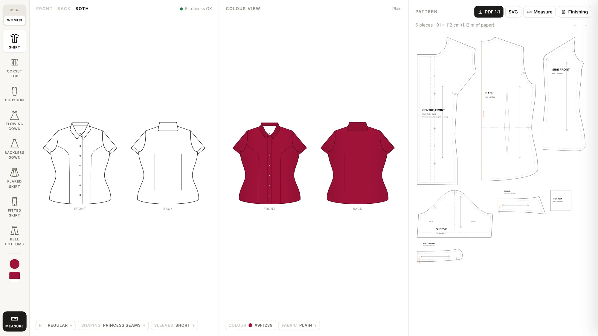
The learner's question was a good one. Fabric changes a pattern most where stretch or drape is part of the fit, so that's where the tool asks:
I ran every women's garment at small and large sizes, in two fits and two option sets: 64 drafts, checked for broken geometry and failed fit checks. That caught two real bugs: sleeves came out narrower than the arm on small sizes, and collars came out slightly small on large ones. The sleeve now lowers its cap until it's wide enough, and the neckline is a little wider.
Before going live, I tried the whole release on my phone from a private preview link. It went live the same evening, and I replied in the thread to tell the people who asked.
While writing this case study I found one more: returning visitors had settings saved from the old version, so the new measurement fields showed up blank. I fixed it the same day.
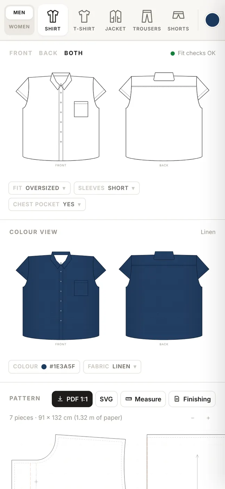
I designed and shipped this end to end, working with Claude as my build partner. I set the direction, made the product calls (who it's for, the scope, Oversized, flat sketches over 3D, the womenswear choices), and tested every release on screen and on paper. Claude wrote most of the drafting code and did the drafting research with me. Working this way, one person could go from a reply on X to eight new garments, live, in a day.
These patterns come from standard drafting formulas, so the tool tells everyone to sew a test version (a toile) in cheap fabric first. Next:
I design apps and websites, build them, and make the brand and video that launch them. Open to new projects and roles.